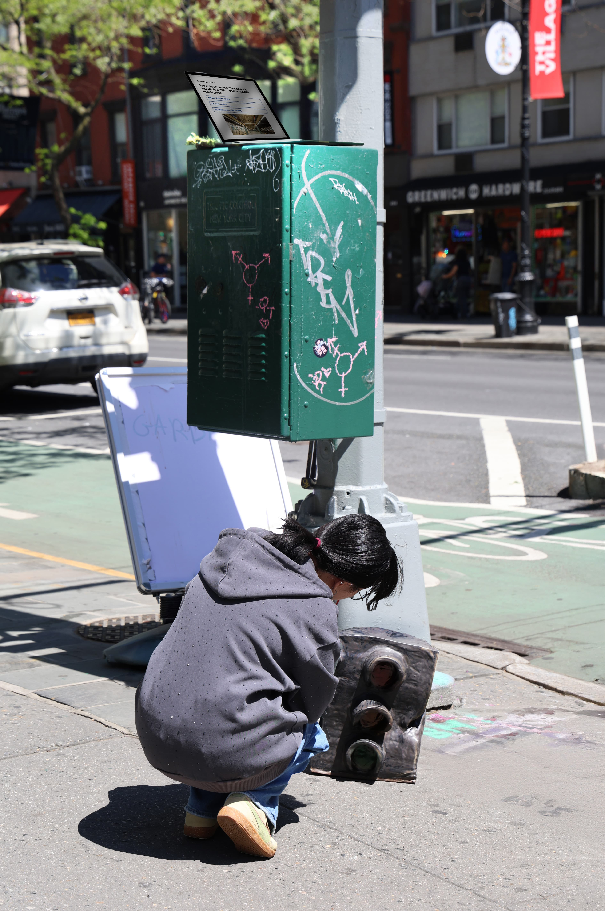
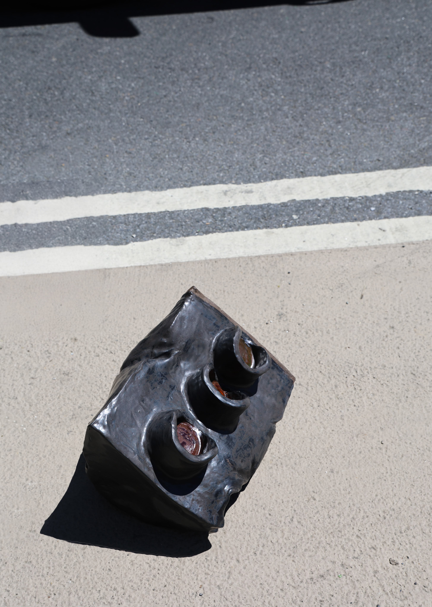
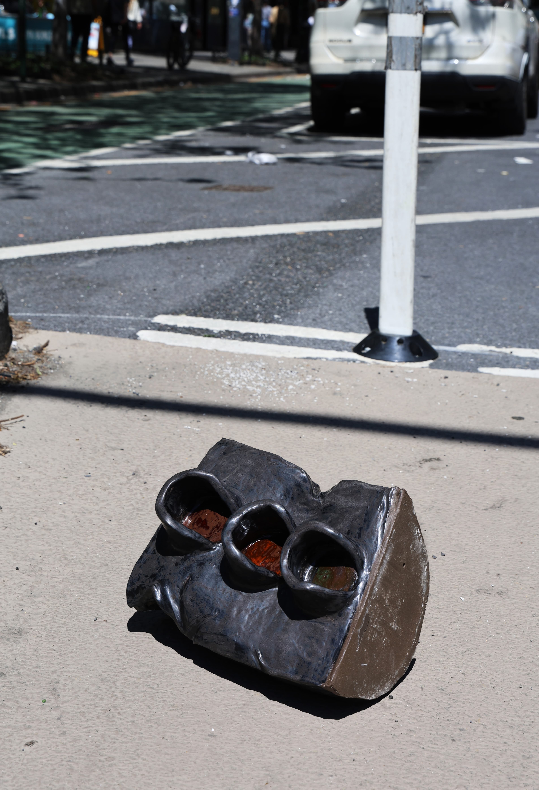
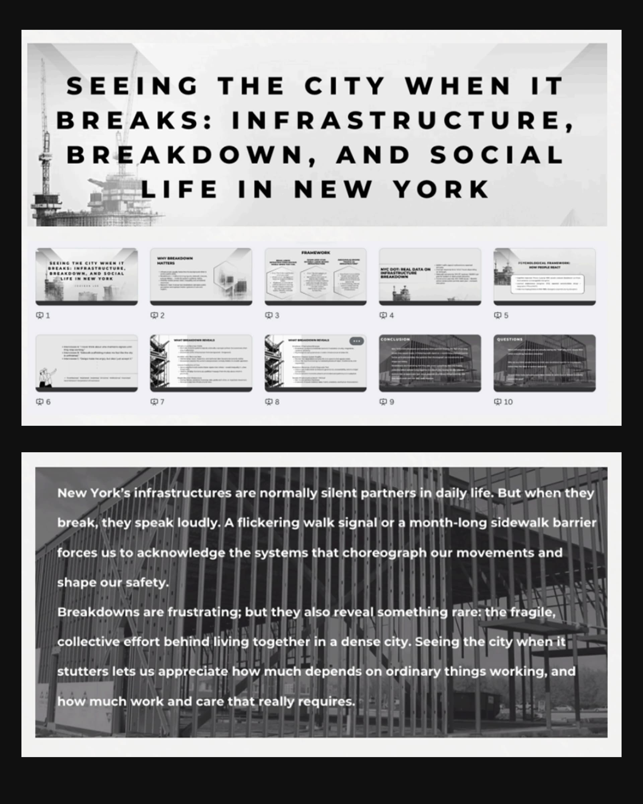
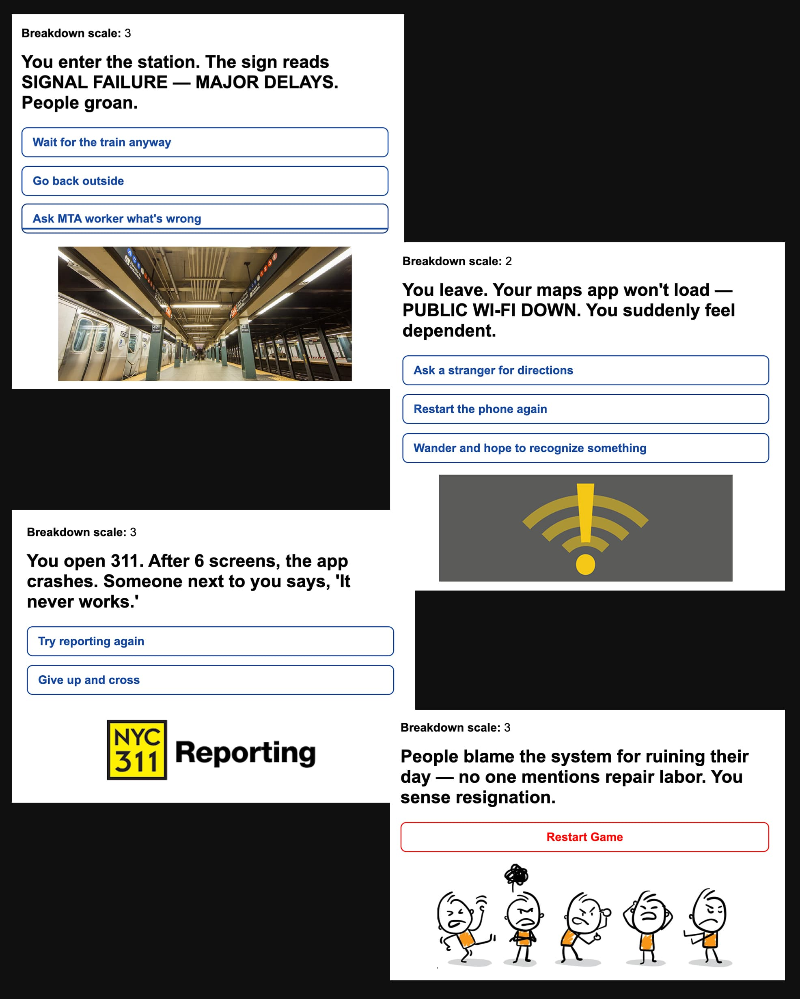

This work brings together a broken ceramic traffic light and an interactive infrastructure-based Flask game to examine how systems of guidance, safety, and coordination quietly shape everyday behavior—and what happens when those systems fracture. Traffic lights are among the most familiar infrastructures: they promise clarity, order, and shared understanding. Red means stop, green means go. Yet when this system breaks down—through malfunction, ambiguity, or absence—our trust in collective rhythm falters.
The ceramic traffic light appears damaged and unreliable. Its material fragility contradicts its original function as a symbol of authority and regulation. Cracks, distortions, and missing signals render its instructions unreadable. Instead of directing movement, it produces hesitation. Viewers are left uncertain: Should I proceed? Should I wait? The object no longer governs behavior but exposes how deeply we rely on external systems to make decisions for us.
This uncertainty continues in the infrastructure Flask game, where participants navigate a system that appears rule-based but produces unpredictable outcomes. Like real infrastructure, the game operates through hidden logics, conditional pathways, and assumptions of rational order. Players attempt to follow the system, yet they quickly encounter misalignments between intention and result. Choice does not guarantee consequence; participation does not ensure clarity. The game does not simulate failure as spectacle, but rather reveals how instability is embedded within systems designed to appear seamless.
Together, the physical object and the digital interaction form a feedback loop between material breakdown and systemic uncertainty. The broken traffic light externalizes infrastructural failure as a bodily experience—pause, doubt, recalculation—while the game internalizes it, asking participants to negotiate trust, expectation, and agency within an unstable framework. Neither offers resolution. Instead, they ask viewers to remain inside the discomfort of not knowing how to proceed.
Rooted in research on infrastructure as both a technical and relational system, this work reflects my broader practice of engaging moments when support structures fail quietly rather than catastrophically. I am interested not in dramatic collapse, but in subtle misfires: the delayed signal, the unreadable instruction, the rule that no longer applies. These moments reveal how much of daily life depends on fragile agreements we rarely question until they stop working.



